Ubuntu 20.04 安装 ROS Noetic 详细教程
本文完整记录在 Ubuntu 20.04 系统中安装 ROS Noetic 桌面完整版的全部步骤，涵盖软件源配置、密钥导入、软件包安装、rosdep 初始化、环境变量配置、roscore 与小海龟仿真验证，并汇总安装全过程中的常见报错及解决方法。按照本文步骤依次操作，即可完成一套可用的 ROS Noetic 开发环境搭建。
ROS 版本与 Ubuntu 系统版本存在严格对应关系，安装前请先确认系统版本：
| Ubuntu 系统版本 | 对应 ROS 版本 |
|---|---|
| Ubuntu 20.04 | ROS Noetic |
| Ubuntu 18.04 | ROS Melodic |
| Ubuntu 16.04 | ROS Kinetic |
说明：本文以 Ubuntu 20.04 + ROS Noetic 为例。若使用其他系统版本，请将下文命令中的版本号
noetic相应替换为melodic或kinetic，其余步骤一致。
1. 添加 ROS 软件源
安装 ROS 的第一步是将 ROS 软件源添加到系统源列表。考虑到国内网络环境，推荐使用中国科学技术大学镜像源，可明显提升后续软件包下载速度。打开终端执行：
sudo sh -c '. /etc/lsb-release && echo "deb http://mirrors.ustc.edu.cn/ros/ubuntu/ $DISTRIB_CODENAME main" > /etc/apt/sources.list.d/ros-latest.list'如需使用 ROS 官方源（国内网络下载较慢，不推荐），可执行：
sudo sh -c 'echo "deb http://packages.ros.org/ros/ubuntu $(lsb_release -sc) main" > /etc/apt/sources.list.d/ros-latest.list'2. 添加软件源密钥
添加软件源后，需要导入 ROS 软件包签名密钥，系统借此验证软件包的合法性与完整性：
sudo apt-key adv --keyserver 'hkp://keyserver.ubuntu.com:80' --recv-key C1CF6E31E6BADE8868B172B4F42ED6FBAB17C654执行成功后终端会输出公钥导入信息，出现“已导入：1”即表示密钥添加成功，效果如图 1 所示。
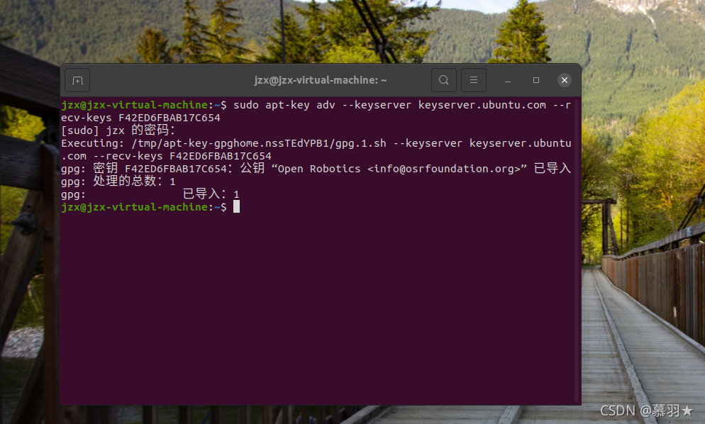
成功输出示例：
Executing: /tmp/apt-key-gpghome.xxx/gpg.1.sh --keyserver hkp://keyserver.ubuntu.com:80 --recv-key C1CF6E31E6BADE8868B172B4F42ED6FBAB17C654
gpg: 密钥 F42ED6FBAB17C654：公钥 "Open Robotics <info@osrfoundation.org>" 已导入
gpg: 处理的总数：1
gpg: 已导入：1提示：若重复执行该命令，终端输出“未改变：1”表示密钥此前已存在，属于正常现象，不影响后续安装。
3. 更新本地软件源
密钥添加完成后，更新系统本地软件包索引，同步最新软件源信息：
sudo apt update终端会依次列出各软件源的命中情况，结束时提示当前可升级的软件包数量，效果如图 2 所示。
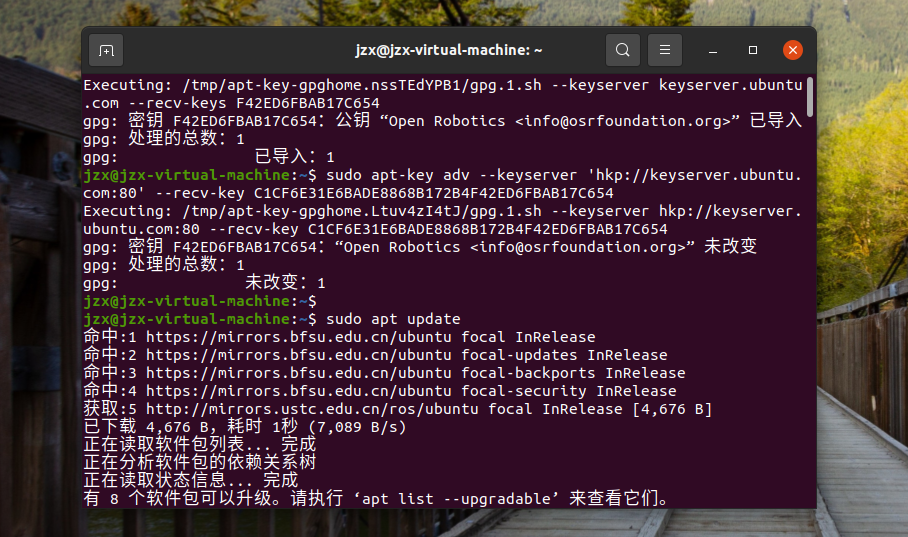
提示：若无线网络下更新很慢、超时或失败，可尝试切换到手机热点后重新执行该命令。
4. 软件源错误处理与优化
4.1 NO_PUBKEY 签名错误
更新软件源时若出现 NO_PUBKEY 签名验证错误，图形界面可能弹出“更新缓存时出错”提示框，提示因缺少公钥无法验证签名，如图 3 所示。
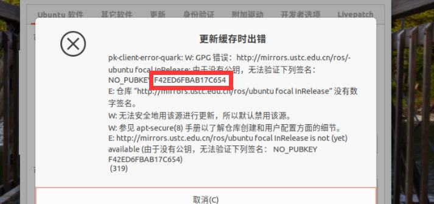
根据错误提示中的公钥编号，执行以下命令重新导入公钥即可：
sudo apt-key adv --keyserver keyserver.ubuntu.com --recv-keys F42ED6FBAB17C654完成后再次执行 sudo apt update 更新软件源。
4.2 下载速度优化
ROS 桌面完整版包含大量依赖包、总体积较大，使用默认源下载可能很慢。建议在正式安装前先将 Ubuntu 系统源更换为国内镜像源，具体操作见附录 A。
5. 安装 ROS Noetic 桌面完整版
Ubuntu 20.04 对应的 ROS 版本为 Noetic。执行以下命令安装桌面完整版，其中包含 ROS 核心库、编译构建工具、Gazebo 仿真环境、rviz 可视化工具等全套组件：
sudo apt install ros-noetic-desktop-full终端会先读取软件包列表、分析依赖关系，并列出本次将同时安装的全部软件包，如图 4 所示。确认无误后输入 Y 回车即开始下载安装。
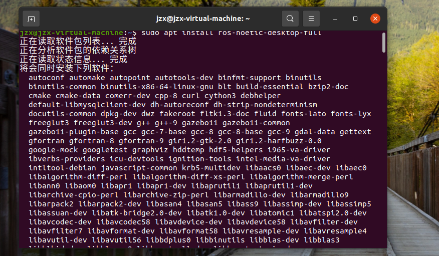
安装过程注意事项：
- 桌面完整版总体积约 568MB，耗时取决于网络速度，请保持网络稳定。
- 若安装途中需要关闭电脑，可按
Ctrl + C暂停后正常关机；下次重新打开终端，按↑方向键调出之前的安装命令，回车输入密码后会自动续传、继续安装。 - 若提示部分软件包无法下载，多为网络波动所致，重新执行一次安装命令即可。
安装结束后，可再次执行一遍安装命令确认。若终端提示 ros-noetic-desktop-full 已经是最新版、新安装 0 个软件包，即说明安装完成，如图 5 所示。
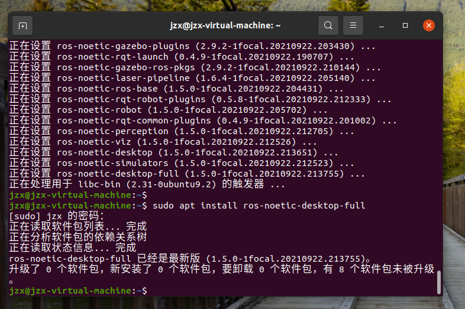
6. 初始化 rosdep 工具
rosdep 是 ROS 的依赖管理工具，可在编译源码前自动安装功能包依赖的系统库。安装完成后先进行初始化：
sudo rosdep init初始化成功后，终端会向 /etc/ros/rosdep 写入默认源列表文件，并提示下一步运行 rosdep update，如图 6 所示。
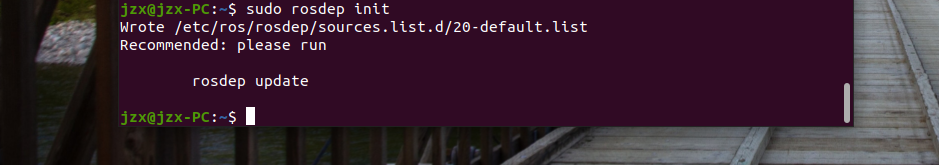
按提示继续执行更新：
rosdep update注意：若
sudo rosdep init或rosdep update执行失败，通常与网络访问或源配置有关，可参考第 7 节的三类常见错误逐一排查。
7. rosdep 初始化常见错误处理
执行 sudo rosdep init 时可能遇到以下三类典型错误，下面分别给出解决方法。
7.1 错误一：找不到 rosdep 命令
若终端提示找不到 rosdep 命令，说明系统尚未安装该工具。Ubuntu 20.04 使用 Python3 版本，执行：
sudo apt install python3-rosdep2终端会列出待安装软件包及占用空间，输入 Y 回车继续，如图 7 所示。旧版本 Ubuntu 也可尝试 Python2 版本：sudo apt install python-rosdep2。
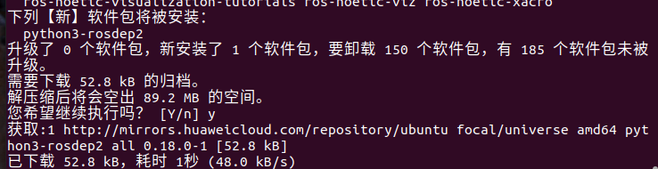
安装完成后重新执行 sudo rosdep init 即可。
7.2 错误二：无法下载默认源列表
若出现如下错误，提示无法从 raw.githubusercontent.com 下载默认源列表，通常是当前网络无法访问 GitHub 原始资源导致：
ERROR: cannot download default sources list from:
https://raw.githubusercontent.com/ros/rosdistro/master/rosdep/sources.list.d/20-default.list
Website may be down.可通过修改 hosts 文件、为该域名指定可用 IP 解决，步骤如下：
- 执行以下命令打开 hosts 配置文件：
sudo gedit /etc/hosts- 在文件末尾添加下面这行 IP 与域名映射，保存后退出：
199.232.28.133 raw.githubusercontent.com- 重新执行
sudo rosdep init。
提示：上述 IP 可能随时间变化。若添加后仍失败，可通过 IPAddress 等 IP 查询网站，输入
raw.githubusercontent.com查询最新真实 IP 并替换；将无线网络切换为手机热点后重试，往往也能解决。
7.3 错误三：默认源文件已存在
若出现如下错误，提示默认源列表文件已经存在，说明此前已初始化过、残留了配置文件：
ERROR: default sources list file already exists:
/etc/ros/rosdep/sources.list.d/20-default.list
Please delete if you wish to re-initialize执行以下命令删除残留文件：
sudo rm /etc/ros/rosdep/sources.list.d/20-default.list删除后重新执行 sudo rosdep init 即可正常初始化。
8. 设置 ROS 环境变量
为让每次打开终端都自动加载 ROS 运行环境，需将环境配置脚本写入用户主目录下的 .bashrc 文件：
echo "source /opt/ros/noetic/setup.bash" >> ~/.bashrc执行以下命令让当前终端立即生效：
source ~/.bashrc重要提示：命令中的版本号必须与实际安装的 ROS 版本严格一致——Ubuntu 20.04 对应
noetic，18.04 对应melodic，16.04 对应kinetic。版本号写错会导致环境加载失败。
版本号写错的修复方法：
若不慎写入错误版本（例如本应是 noetic 却写成 melodic），终端会提示 /opt/ros/melodic/setup.bash: 没有那个文件或目录，按以下步骤修复：
- 执行
gedit ~/.bashrc打开配置文件。 - 找到文件末尾的
source /opt/ros/melodic/setup.bash一行，将melodic改为正确的noetic；若存在多行重复配置，删除多余行，只保留一行正确配置。 - 保存退出，重新执行
source ~/.bashrc。
9. 安装 rosinstall 工具集
rosinstall 是 ROS 生态常用的功能包下载与管理工具集，包含 rosinstall、rosinstall-generator、wstool 等辅助工具，执行以下命令一并安装：
sudo apt install python3-rosinstall python3-rosinstall-generator python3-wstool系统会自动下载并配置相关依赖（含版本控制工具等），安装过程如图 8 所示，等待全部设置完成即可。
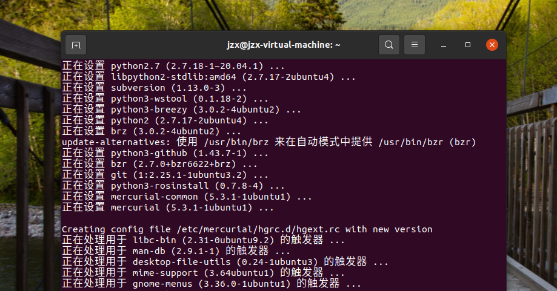
10. 验证 ROS 是否安装成功
完成以上步骤后，通过启动 ROS 核心节点检验安装是否完整、环境是否正确。
10.1 启动 roscore 核心节点
在终端输入以下命令启动 ROS 核心：
roscore正常情况下，终端会依次输出日志检查、roslaunch 服务、版本信息，在 SUMMARY 中列出参数 /rosdistro: noetic，随后自动启动 master 与 rosout 进程，如图 9 所示。看到 started core service [/rosout] 且无红色报错，即说明 ROS 核心环境运行正常。
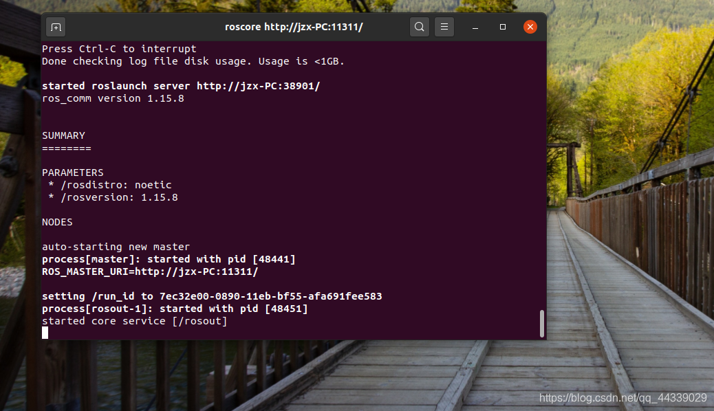
10.2 常见异常与处理
异常一：roscore 命令未找到
若提示 Command 'roscore' not found，说明缺少 roslaunch 组件，按终端提示执行：
sudo apt install python3-roslaunch安装完成后重新执行 roscore 验证。
异常二：Resource not found: roslaunch
若终端出现红色的 Resource not found: roslaunch 报错，并提示异常已写入日志文件（如图 10），说明桌面版组件安装不完整，或当前终端未正确加载环境变量。
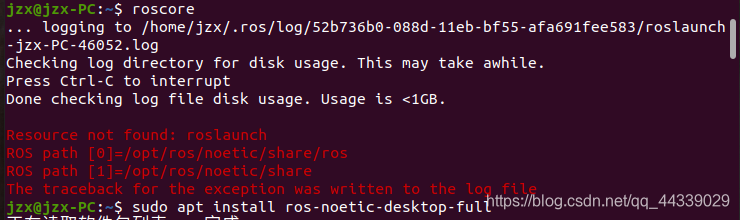
先执行以下命令手动加载环境变量后重试：
source /opt/ros/noetic/setup.bash若仍报错，重新执行桌面完整版安装命令补全缺失组件：
sudo apt install ros-noetic-desktop-full11. 小海龟仿真功能验证
roscore 能正常启动只说明核心环境可用。为进一步验证 ROS 的节点通信、话题发布与订阅机制，可运行官方自带的小海龟（turtlesim）仿真例程。
11.1 启动小海龟仿真节点
保持运行 roscore 的终端不要关闭，按 Ctrl + Alt + T 打开新终端，执行：
rosrun turtlesim turtlesim_node执行后会弹出蓝色背景的 TurtleSim 仿真窗口，窗口中央出现一只小海龟，终端同时输出小海龟初始坐标。
11.2 启动键盘控制节点
再按 Ctrl + Alt + T 打开第三个终端，执行：
rosrun turtlesim turtle_teleop_key终端输出 Use arrow keys to move the turtle. 'q' to quit. 后，用鼠标点击选中该终端使其获得焦点，再按 ↑ ↓ ← → 方向键，即可控制小海龟移动，移动轨迹以白色线条绘制，整体效果如图 11 所示。
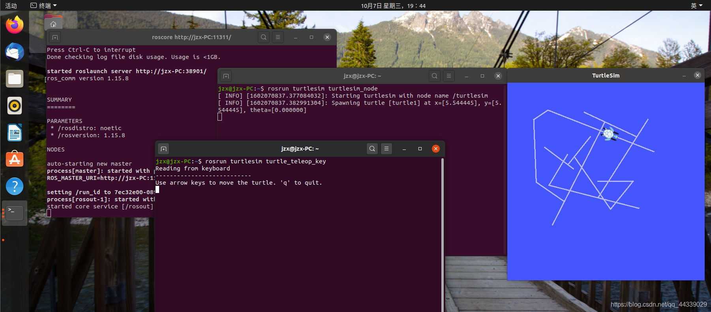
结论：若小海龟能正常响应方向键并绘制轨迹，说明 ROS 节点与话题通信机制工作正常，至此 ROS Noetic 在 Ubuntu 20.04 上的安装与配置全部成功。
附录 A：Ubuntu 更换国内软件源
安装 ROS 时若软件包下载很慢，往往是因为 Ubuntu 默认源服务器在国外，更换为国内镜像源可显著提速，步骤如下。
A.1 打开“软件和更新”设置
点击桌面左上角“活动”，在搜索框输入“软件”，打开“软件和更新”设置窗口。
A.2 选择下载服务器
在“Ubuntu 软件”标签页找到“下载自”下拉菜单，选择“其他站点”，在列表中选择合适的国内镜像源：
- 家庭网络：推荐阿里云镜像（
mirrors.aliyun.com）。 - 校园网络：推荐带
.edu后缀的高校镜像源，如中科大、清华、北外等。
也可点击“选择最佳服务器”，由系统自动测速推荐最快的服务器。选定后点击“选择服务器”，按提示输入开机密码认证，配置窗口如图 12 所示。
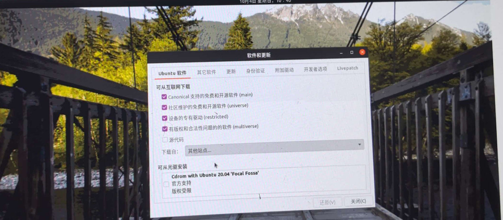
下面的动图完整演示了“下载自 → 其他站点 → 选择最佳服务器 → 自动测速”的操作过程（GitHub 页面中会自动播放）：
A.3 重新载入软件列表
认证完成后关闭“软件和更新”窗口，系统会弹出“更新缓存”提示并自动重新载入软件列表，等待进度条走完、缓存更新完成，新源即生效，过程如图 14 动图所示。最后在终端执行 sudo apt update 确认软件源可正常访问。
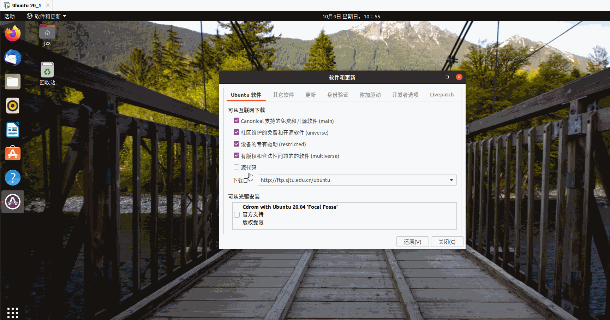
常见问题速查
| 问题现象 | 解决方法 | 对应章节 |
|---|---|---|
NO_PUBKEY 签名错误 |
用 apt-key --recv-keys 重新导入公钥 |
4.1 |
找不到 rosdep 命令 |
sudo apt install python3-rosdep2 |
7.1 |
| 无法下载 default sources list | 修改 /etc/hosts 指定 GitHub 域名 IP |
7.2 |
| default sources list already exists | sudo rm 删除残留文件后重新初始化 |
7.3 |
roscore 命令未找到 |
sudo apt install python3-roslaunch |
10.2 |
Resource not found: roslaunch |
先 source 环境变量，必要时重装完整版 |
10.2 |
| 下载速度慢 | 更换国内 Ubuntu 镜像源 | 附录 A |
本文环境：Ubuntu 20.04 LTS + ROS Noetic Ninjemys。